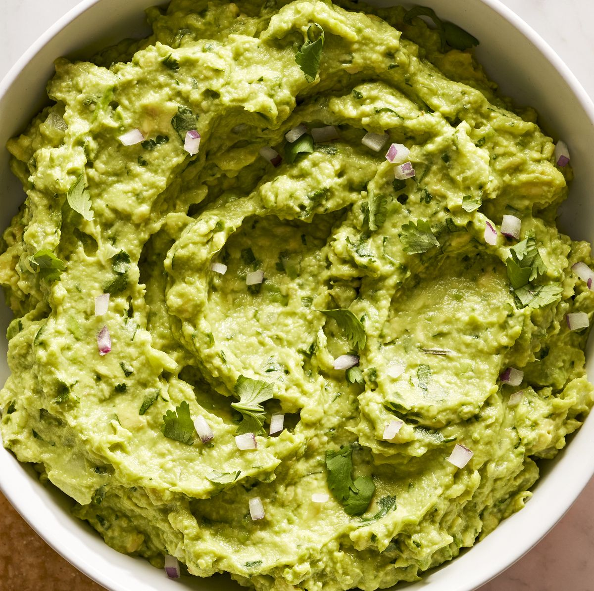

Fresh and Zesty Guacamole Recipe
Description:
Guacamole is a delicious and healthy dip that's perfect for parties or as a snack. This recipe delivers a zesty and creamy guacamole with a burst of flavor from fresh ingredients like avocados, tomatoes, and lime juice. Serve with tortilla chips or as a topping for your favorite Mexican dishes.

Ingredients:
- 3 ripe avocados, peeled, pitted, and mashed
- 1 lime, juiced
- 1 teaspoon salt
- 1/2 cup diced onion
- 3 tablespoons chopped fresh cilantro
- 2 roma (plum) tomatoes, diced
- 1 teaspoon minced garlic
- 1 pinch cayenne pepper (optional)
Steps:
- In a medium bowl, mash together the avocados, lime juice, and salt. The lime juice not only adds flavor but prevents the guacamole from browning.
- Stir in the diced onion, cilantro, tomatoes, and minced garlic.
- Add a pinch of cayenne pepper for a hint of heat if desired.
- Cover with plastic wrap and refrigerate for 1 hour to let the flavors meld.
- Serve your fresh guacamole with tortilla chips or as a topping for tacos, burritos, or nachos.
- Enjoy the vibrant flavors of homemade guacamole!